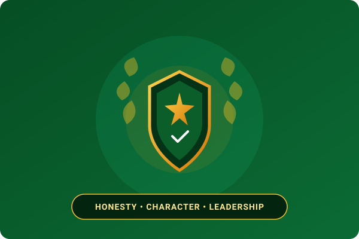

Pillar 1Youth Integrity and Leadership Development
Anchored directly in SYIAD's first constitutional objective to propagate honesty and integrity among African youths. This program focus emphasizes character building, moral accountability, transparency, and ethical leadership development, equipping young Africans to act as trustworthy role models within their communities and professional spheres.